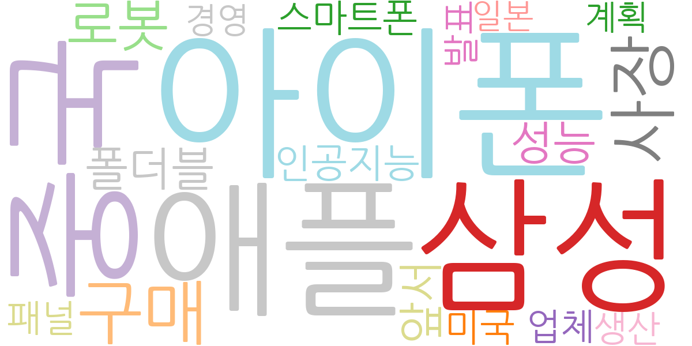
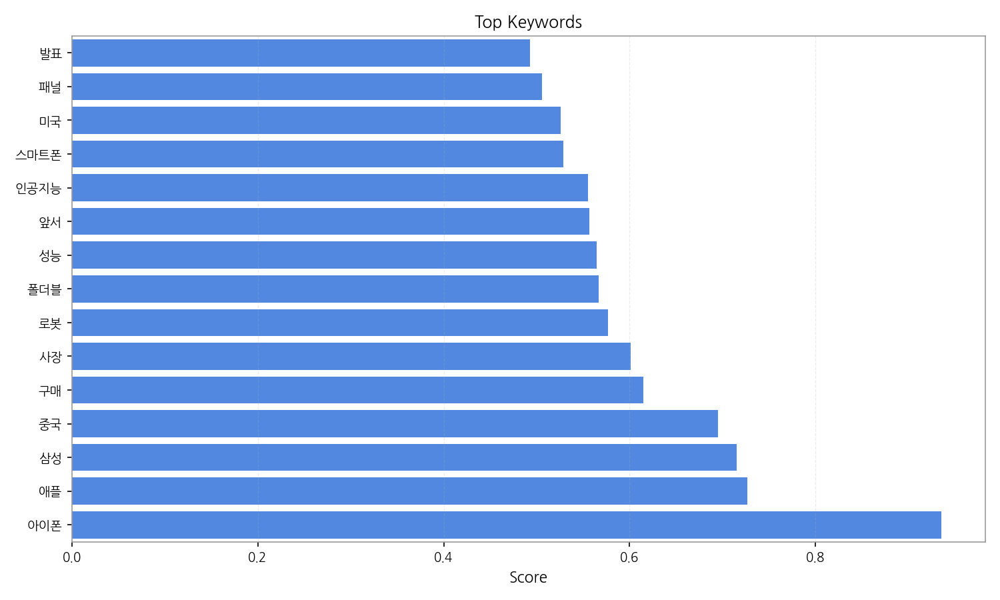
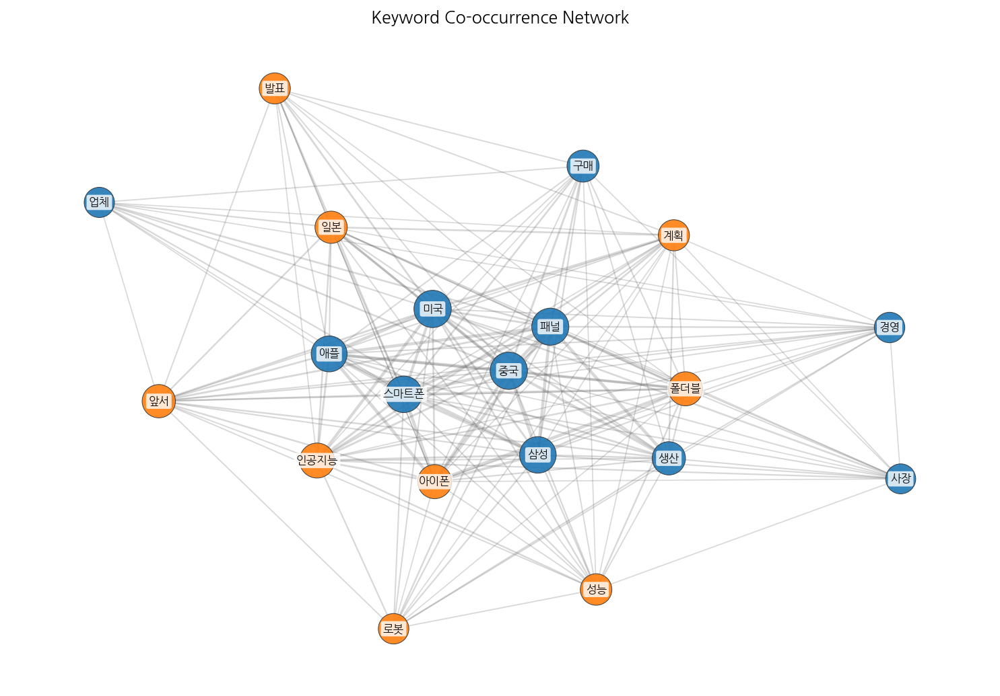
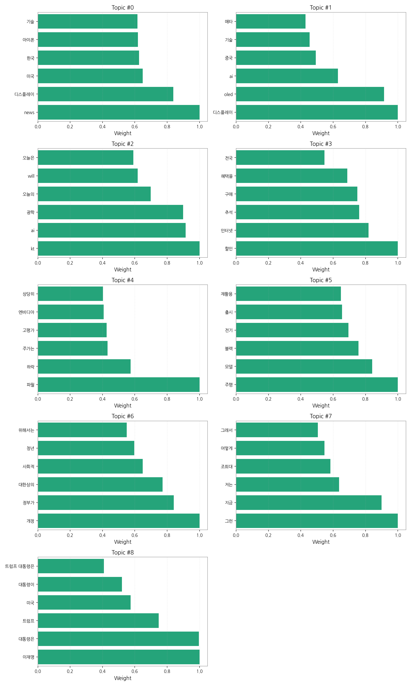
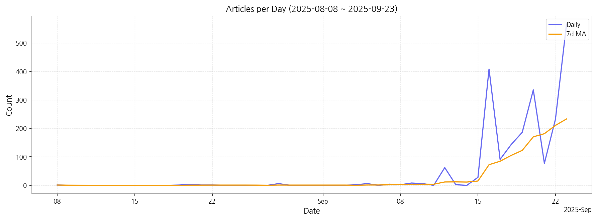

1. 핵심 맥락:
2. 최근 변화/스파이크:
3. 실무 인사이트:

| Rank | Keyword | Score |
|---|---|---|
| 1 | 아이폰 | 0.935 |
| 2 | 애플 | 0.726 |
| 3 | 삼성 | 0.715 |
| 4 | 중국 | 0.695 |
| 5 | 구매 | 0.615 |
| 6 | 사장 | 0.601 |
| 7 | 로봇 | 0.576 |
| 8 | 폴더블 | 0.567 |
| 9 | 성능 | 0.564 |
| 10 | 앞서 | 0.557 |
| 11 | 인공지능 | 0.555 |
| 12 | 스마트폰 | 0.529 |
| 13 | 미국 | 0.526 |
| 14 | 패널 | 0.506 |
| 15 | 발표 | 0.493 |




1. 핵심 맥락:
2. 최근 변화/스파이크:
3. 실무 인사이트:
| Idea | Target | Value Prop | Score |
|---|---|---|---|
| XR 기기용 초고해상도 Micro-OLED 패널 | 북미 빅테크 기업 (메타, 애플, 구글 등), XR 기기 제조사 | 기존 Micro-OLED 대비 2배 이상의 해상도 및 높은 명암비, 빠른 응답 속도, 뛰어난 색 재현율, 초소형/경량 디자인, 경쟁사 대비 우수한 수율 및 생산 능력. | 4.50 |
| 차량용 AR HUD (Augmented Reality Head-Up Display) 솔루션 | 글로벌 완성차 OEM (프리미엄 브랜드 중심), Tier 1 자동차 부품 공급사 | 기존 HUD 대비 월등한 정보량과 직관적인 시각 경험 제공, AI 기반 실시간 객체 인식 및 경로 안내, 운전자 맞춤형 정보 제공, 경쟁사 대비 뛰어난 AR 구현 기술 및 고휘도/고해상도 마이크로디스플레이 기술력 확보. | 4.20 |
| AI 기반 디스플레이 공정 자동화 및 수율 개선 솔루션 | 국내외 디스플레이 패널 제조사 | 기존 공정 대비 향상된 수율 및 생산성, 불량 예측 정확도 향상, 공정 최적화 및 자동화, 실시간 공정 모니터링 및 제어, 경쟁사 대비 뛰어난 AI 기술력 및 데이터 분석 능력. | 4.00 |
| IT 기기용 벤더블 OLED 패널 솔루션 | 글로벌 스마트폰 제조사 (삼성전자, 애플, 샤오미 등), IT 기기 제조사 | 기존 플렉서블 디스플레이 대비 뛰어난 내구성 및 벤딩 성능, 얇고 가벼운 디자인, 높은 화질 및 에너지 효율, 다양한 폼팩터 적용 가능성, 경쟁사 대비 우수한 벤딩 수명 및 신뢰성. | 3.80 |
| 차세대 디스플레이용 신소재 개발 및 공급 | 국내외 디스플레이 패널 제조사, 소재 부품 기업 | 기존 소재 대비 뛰어난 성능 및 수명, 낮은 생산 비용, 안정적인 공급망 확보, 고객 맞춤형 소재 개발 및 기술 지원, 경쟁사 대비 빠른 개발 속도 및 유연한 대응 능력. | 3.50 |